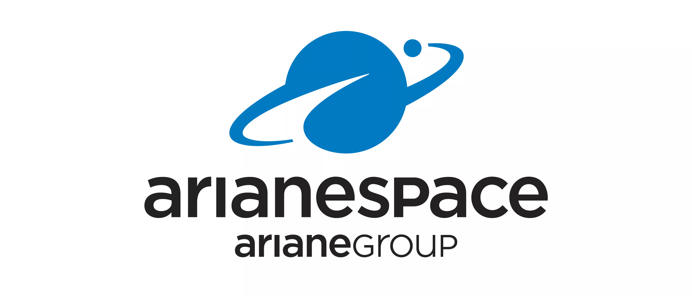

Arianespace was founded in 1980 as the world's first commercial launch service provider. Based in France, it operates the Ariane, Vega, and Soyuz rockets from the Guiana Space Centre in South America. The company has launched hundreds of satellites and remains a key player in Europe's space industry.